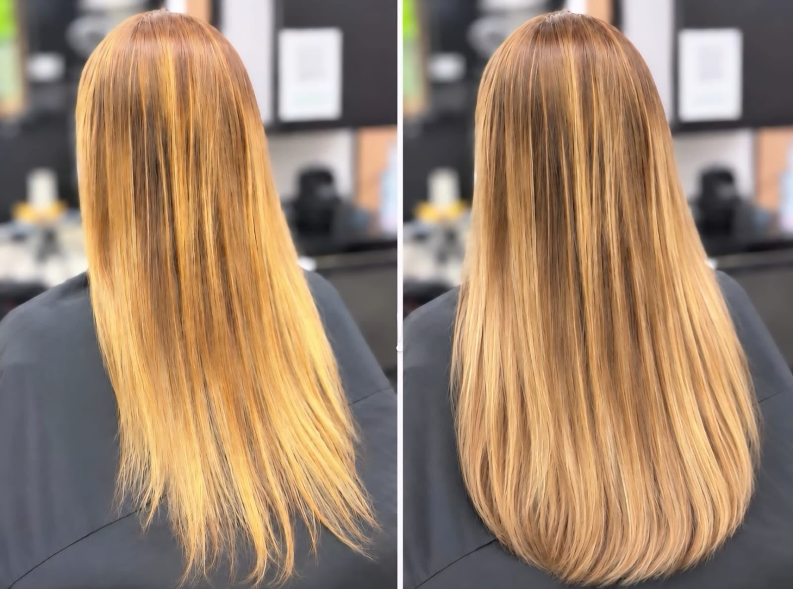

Avaliação
Conversamos sobre o resultado desejado e avaliamos os fios para orientar as possibilidades de aplicação.
DANÚBIA SANTOS STUDIO · MEGA HAIR
Comprimento, volume e movimento em harmonia com você. Conheça o mega hair no Sion, em Belo Horizonte, e descubra as possibilidades para o seu cabelo.
Agende sua avaliação
BELEZA EM CADA DETALHE
O mega hair é uma técnica de alongamento que acrescenta mechas ao cabelo para trazer mais comprimento, volume ou os dois. A proposta é criar uma composição em harmonia com os seus fios e com o visual que você deseja.
A escolha começa com uma conversa: entender o seu cabelo, a sua rotina e as suas expectativas ajuda a definir a técnica, a tonalidade e a quantidade de mechas. No Danúbia Santos Studio, esse é o primeiro passo para planejar a sua transformação.
DO PRIMEIRO ENCONTRO AO DIA A DIA
Conversamos sobre o resultado desejado e avaliamos os fios para orientar as possibilidades de aplicação.
Comprimento, cor e volume são planejados para combinar com o seu cabelo e com o seu estilo.
Você recebe orientações de cuidado e combina os retornos conforme a técnica escolhida e o crescimento dos fios.
SEU MOMENTO DE CUIDADO
Os cuidados variam conforme a aplicação. Siga as orientações recebidas no salão e tire suas dúvidas sempre que precisar.
VAMOS CONVERSAR?
A escolha depende dos seus fios, do efeito desejado e da sua rotina. Na avaliação, converse sobre as técnicas disponíveis no salão e qual delas se adapta ao seu caso.
Além de acrescentar comprimento, ele também pode ser usado para trazer volume. A quantidade e a distribuição das mechas são definidas durante o planejamento.
O intervalo varia conforme a técnica e o crescimento do cabelo. A profissional orienta o prazo de retorno durante o atendimento.
O orçamento e o tempo de atendimento dependem da técnica, do comprimento e da quantidade de mechas. Fale com a equipe pelo WhatsApp para combinar uma avaliação.
UM NOVO VISUAL COMEÇA COM UMA CONVERSA
Conte para a gente o que você imagina para o seu cabelo.
Falar pelo WhatsAppNOSSO INSTAGRAM
@studiodebelezadanubia ↗